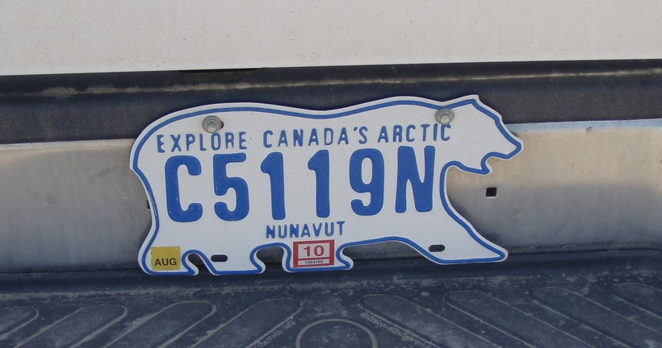
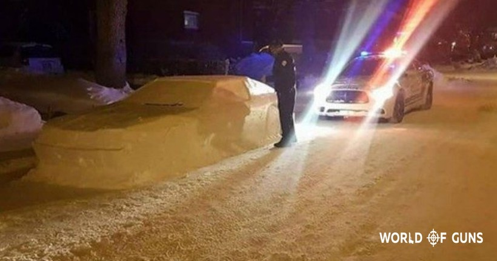

Канада

Описание:
Пространство природной красотыКанады, с горами и ледниками, уединенными озерами и лесами, почти не имеют себе равных во всем мире.
Но очарование этой страны является не только на свежем воздухе. Страна имеет космополитические города, которые являются чистыми, безопасными,
дружественными и мультикультурными. На самом деле, Канада неоднократно оценивалась как одна из самых приемлемых для жизни стран мира
5 причин, почему Канада — это какой-то волшебный мир, а не обычная страна
Информация взята с источника
- Канадцы настолько добрые и милые, что периодически они выходят на улицу с воодушевляющими плакатами,
способными подбодрить кого угодно (Надпись на плакатах: «Ты прекрасен», «С тобой мир лучше»).
- Когда-то у Нунавута, северной территории Канады, были номерные знаки в виде белого медведя.
Сейчас их уже заменили на обычные прямоугольные, но у некоторых коллекционеров все еще можно увидеть жестяного мишку.

- У канадцев прекрасное чувство юмора. Только взгляните, как весело житель Монреаля подшутил над местными полицейскими.
В месте, где запрещена парковка, он слепил из снега автомобиль, а для пущей правдоподобности закрепил на нем настоящие дворники.
Стоит заметить, что полицейские шутку оценили и посмеялись от души.

- В Канаде очень много нефти. По ее количеству страна занимает третье место в мире.

- В Канаде действует благотворительная организация Cleaning For A Reason,
которая помогает с домашними делами женщинам, борющимся с тяжелыми заболеваниями.
Цены на билеты